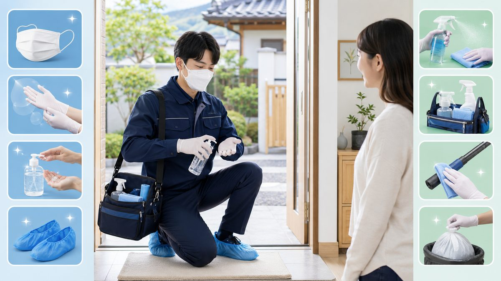

집으로 사람이 방문하는 서비스인 만큼, 출장마사지에서 위생은 ‘있으면 좋은 것’이 아니라 기본 요건입니다. 막연히 ‘깨끗하겠지’가 아니라, 받는 사람이 직접 확인할 수 있는 기준을 67 마사지 운영 원칙과 함께 정리했습니다.
피부에 직접 닿는 타월·시트 같은 소모품은 1인 1회용이 원칙입니다. 앞 사람이 쓰던 것을 그대로 다시 쓰지 않고, 매 방문마다 새것으로 교체하는지가 위생의 핵심입니다. 오일도 개인 위생을 고려해 관리되어야 합니다.
관리 시작 전 손 세정, 필요 시 도구 소독은 기본 절차입니다. 손톱 관리, 위생적인 복장도 신뢰의 신호입니다. 현장에서는 시작 전에 이러한 준비를 자연스럽게 진행합니다.
“소모품은 1회용인가요?”, “타월은 새것인가요?”라고 묻는 것은 전혀 무례한 일이 아닙니다. 오히려 정상적으로 운영되는 곳일수록 이런 질문에 분명하게 답합니다. 답을 흐리거나 불쾌해한다면, 그 자체가 하나의 신호입니다.
위생은 양방향입니다. 방문 전 가볍게 샤워를 해두면 서로 쾌적하고 관리도 바로 시작할 수 있습니다. 관리 공간은 평평하고 청결한 자리를 마련해 주시면 좋습니다. 작은 준비가 서로의 안심을 만듭니다.
67 마사지는 직접 닿는 소모품의 1인 1회용 교체를 원칙으로 하고, 출장 관리사 정보를 사전에 안내합니다. 위생은 마케팅 문구가 아니라 매 방문에서 지켜야 지속되는 신뢰라고 보고, 기본을 반복해서 지키는 것을 가장 중요하게 여깁니다.
오일은 직사광선을 피해 밀폐 보관하고, 사용 분량만 덜어 쓰는 것이 위생적입니다. 부항·괄사 같은 도구를 쓰는 경우 사용 후 세척·소독이 되어야 합니다. 받는 입장에서 도구가 깨끗한 상태로 꺼내지는지를 보는 것만으로도 관리 수준을 가늠할 수 있습니다.
피부에 상처나 염증이 있는 부위는 마사지를 피하는 것이 좋습니다. 발열·감기 등 컨디션이 좋지 않은 날은 무리해서 받기보다 회복 후로 미루는 편이 서로에게 안전합니다. 이는 받는 사람과 관리사 모두를 위한 기본 배려입니다.
관리 뒤에는 사용한 타월을 정리하고, 오일이 남았다면 가볍게 닦아내며 수분을 보충하세요. 깔끔한 마무리는 다음 이용을 더 쾌적하게 만듭니다. 위생은 시작 전 점검과 끝난 뒤 정리가 모두 갖춰질 때 완성됩니다.
좋은 곳은 묻기 전에 먼저 알려줍니다. ‘소모품은 1회용으로 교체합니다’, ‘관리사 정보는 미리 안내드립니다’처럼 위생·신뢰 정보를 자연스럽게 먼저 꺼내는지 보세요. 반대로 가격·위생·관리사 정보를 모두 ‘와서 보면 안다’는 식으로 미루면 주의가 필요합니다.
피부에 상처·염증·발열이 있는 날은 관리를 미루는 것이 서로에게 안전합니다. 또 관리 공간을 미리 환기하고 평평한 자리를 마련해 두면 위생적으로도, 진행 면에서도 훨씬 쾌적합니다. 위생은 한쪽의 노력만으로 완성되지 않고, 양쪽의 작은 배려가 모일 때 지켜집니다.
결국 위생은 ‘먼저 알려주는 곳’과 ‘확인하는 이용자’가 만날 때 가장 확실하게 지켜집니다.